Bible Concordance for Android
The Bible in your pocket: small, fast and fully offline.
Get it for Android
Version 3.0.0 · Android 7 or newer · phones only · 86 MB
A companion to the Windows app, for reading, finding a passage quickly, asking a question, studying a verse, and keeping your own bookmarks, highlights and notes. Version 3 adds a clean Search page with themes, Bible stories, pages for children, Bible maps and answers that quote the Bible first (see what's new). It is still a smaller version on purpose, so that it stays quick and fits on a phone.
Google Play. Google checks every new version before it goes out, so version 3 can reach Google Play a little after it appears here, and the Google Play page may still show an older version or say the app is not available to you yet. The file above is the same app and always has the newest version: use it if Google Play does not offer it to you.
Installing from Google Play
- On the phone, tap Get it on Google Play above. It opens the Play Store app.
- Tap Install, then Open. The first start takes a few seconds while the Bible is unpacked; after that it opens at once, where you left off.
- Google Play keeps it up to date from then on.
Installing the file directly (without Google Play)
- Tap Download the file (.apk) above, on the phone. If the browser warns that the file might be harmful, choose Download anyway; it says this about every app that does not come from Google Play.
- When the download finishes, tap Open, or find BibleConcordance_Android_3.0.0.apk in the phone's Files app under Downloads and tap it.
- The first time, Android says that the browser (or the Files app) is not allowed to install apps. Tap Settings, switch on Allow from this source, and go back.
- Tap Install. If Google Play Protect says it does not recognise the developer, choose Install anyway (sometimes under "More details"). It says this about any app installed from a file instead of from Google Play.
- Tap Open. The first start takes a few seconds while the Bible is unpacked; after that it opens at once, where you left off.
Samsung Galaxy phone says the app is blocked or not valid?
Samsung phones are stricter than most about apps that do not come from the Galaxy Store or the Play Store. The app is the same file, and it installs fine once your phone is told to allow it. These are Samsung's own steps (Samsung support):
- Open Settings, search for Install unknown apps and tap it. Tap Install unknown apps once more.
- Tap the switch next to the app you downloaded the file with, such as Chrome, Samsung Internet or My Files, so that it is on.
- Go back and open the downloaded file again. If Google offers to check the app, or Play Protect warns about it, choose Install anyway (sometimes under “More details”). If it still stops you, go back to the file and try once more.
- Still blocked? Newer Galaxy phones have Auto Blocker, which refuses every app from outside the two stores and greys out the switch above. Go to Settings → Security and privacy → Auto Blocker and switch it off, install the app, then switch it back on if you wish (about Auto Blocker). Samsung warns that, while it is off, installing apps from other places carries more risk, so only do this for files you trust, such as this one: compare its SHA-256 under “Checking the file” below.
Updating, and moving your notes
- The Google Play version is updated by Google Play, so the points below about Install, and the daily check, are for the file from this website only.
- Using the file from this website and want the Google Play version instead? Save a backup first (in the app: More → Save a backup), install it from Google Play, and restore the backup if your notes are not there. Android may ask you to remove the old copy first, and removing it deletes the notes stored in it.
- Installing this version over an older one keeps everything: your bookmarks, highlights, notes and reading plans. The first time version 3 opens on a phone that had the app, a small What's new note comes up once; it can be read again under More → About.
- From version 0.3.2 the file from this website tells you when a new version is out. It looks once a day when you open it. Tap Install and it downloads the update and hands it to Android, which asks you to confirm.
- The first time, Android asks you to allow Bible Concordance to install apps. Switch on Allow from this source, go back, and tap Install again.
- You can turn the daily check off, or check by hand, under More → Updates. Nothing about you or your phone is sent.
- If you have version 0.3.0 or older, download and install the newest version from this page once; after that, updates come to you.
- Save a backup first (in the app: More → Save a backup) if your notes matter to you. Uninstalling the app deletes them.
- Keep in step with your computer: at home on your Wi-Fi, More → Keep in step → Find my computer, and type the code the Windows app shows (Settings → Keep in step → Pair a phone). Your bookmarks, highlights, notes and reading plans then stay the same on both.
- The same backup file can be restored in the Windows app (My Study → Import backup), and a backup made there can be restored on the phone (More → Restore a backup).
Google Play or the file: what is the difference?
- It is the same app, with the same pages, pictures and features.
- Google Play updates the app for you. The file from this website looks once a day for a newer version and offers it (you can switch that off).
- The daily reminder from Google Play may arrive a few minutes after the time you chose; the file from this website can be exact.
- Both are signed with the same key, and neither needs an account or collects anything about you.
Checking the file
The file's SHA-256 is 60712360bcdfa194a06e8fb2856a945490fcd4a8efc1e58e4673e6aa1998cd4a.
What's new in version 3
- A clean Search page, and themes. The app opens on Search with your own “Gospel” wordmark, one box for a reference, a story, a question or a subject, Continue reading and your recent searches. Choose from 24 themes, from Advent and Christmas to Pentecost, Passover and Harvest, each with its own colours and wordmark; the list shows every theme with a live preview. Near a season the app offers its theme and asks whether to keep it. Mix any wordmark with any background, or pick a colour of the app.
- Ask. More than 400 questions have a written answer that quotes the Bible first and says where Christians hold different views. Family questions (a person's parents, wife or sons) are answered from the Bible's own lists, a misspelt word is put right, and under an answer the app suggests matching stories and “Verses for…” pages.
- Extras (the Plans tab, renamed). 31 Bible stories, 22 “Verses for…” pages (anxiety, fear, hope, joy, love, wisdom, heaven and more) and 20 pages for children, each with the passages to read in your own Bible, plus the Authors of the Bible, the dictionary, your reading streak and the reading plans. After you follow a Bible link from a story, a Back bar takes you back to the same place.
- Bible maps. Nine ready-made maps (the twelve tribes, the kingdoms of Saul, David and Solomon, the ministry of Jesus, Paul's journeys and more) to zoom and drag, each with the passages it goes with and its credit.
- Pictures. Paintings for the stories and colour drawings for the children's pages are optional downloads (7 MB and 0.2 MB). A button turns a children's drawing into an outline to colour in.
- Share. A Share button on every story and page sends it, set out as in the app with the Scripture words (and the picture, if you have downloaded the pictures). Verse for today has a Share button too, and a picture can hold up to three verses.
- More stories without an update. Fetch additional stories, at the bottom of each list, brings any stories and pages added since this version came out. Two new stories and two new pages for children are the first.
- Commentaries on a verse. Tap a verse, then Commentaries, to read what the commentaries you have installed say about it. A Bible you add from a file that carries Strong's numbers keeps them, so you can tap a word for its Hebrew or Greek.
- A tidier More. Everything you can add is in one Downloads list, with Other links to where e-Sword, MySword and MyBible files can be found, and what is already on your phone in one closed Installed row. Your reading streak can be kept in step with the Windows app.
Screenshots
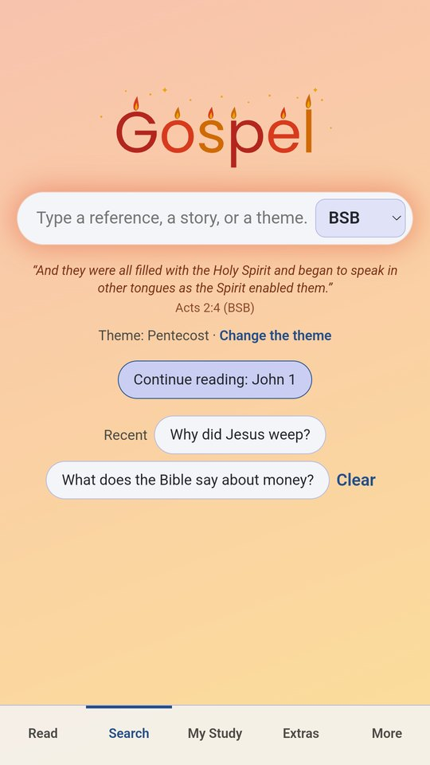
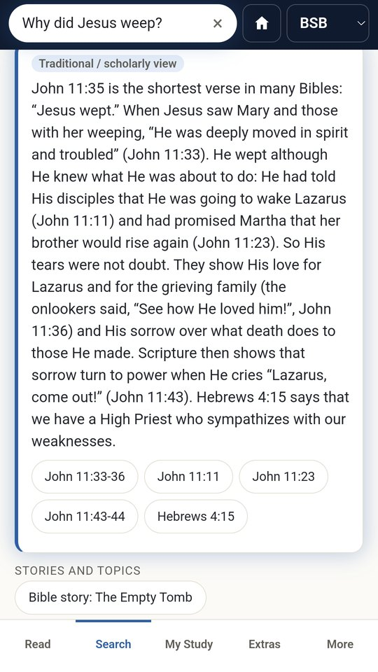
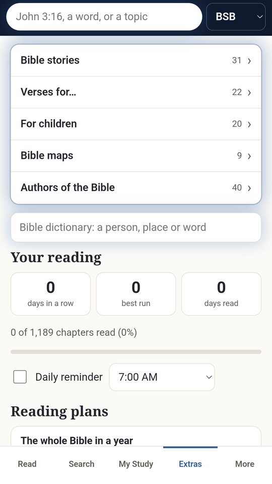
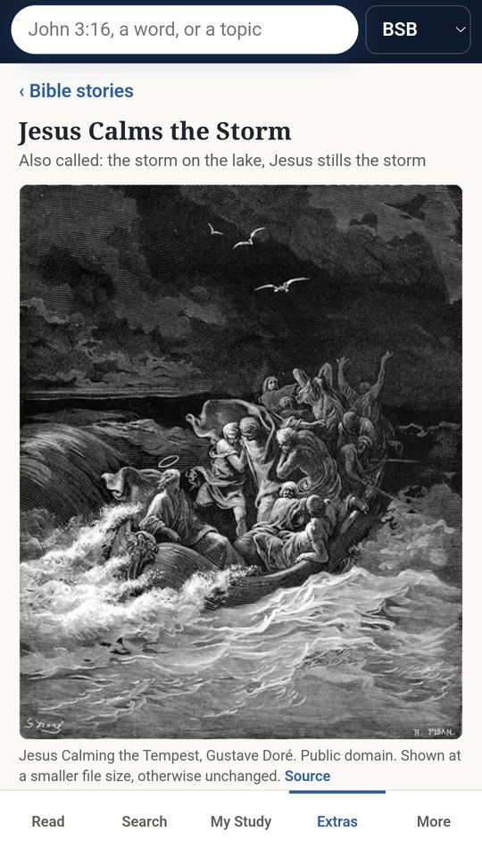
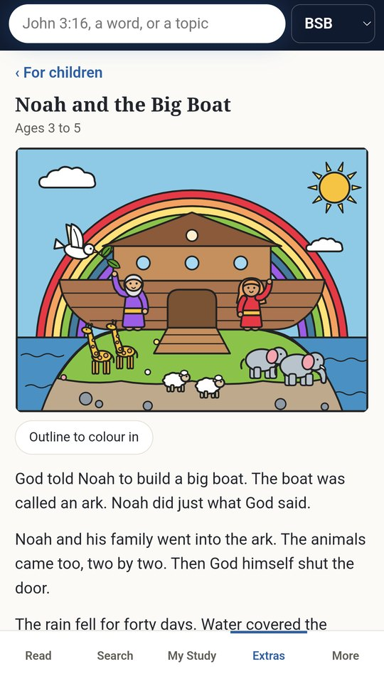
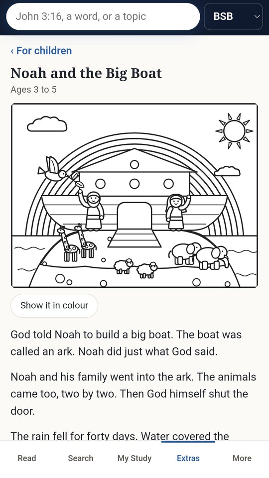
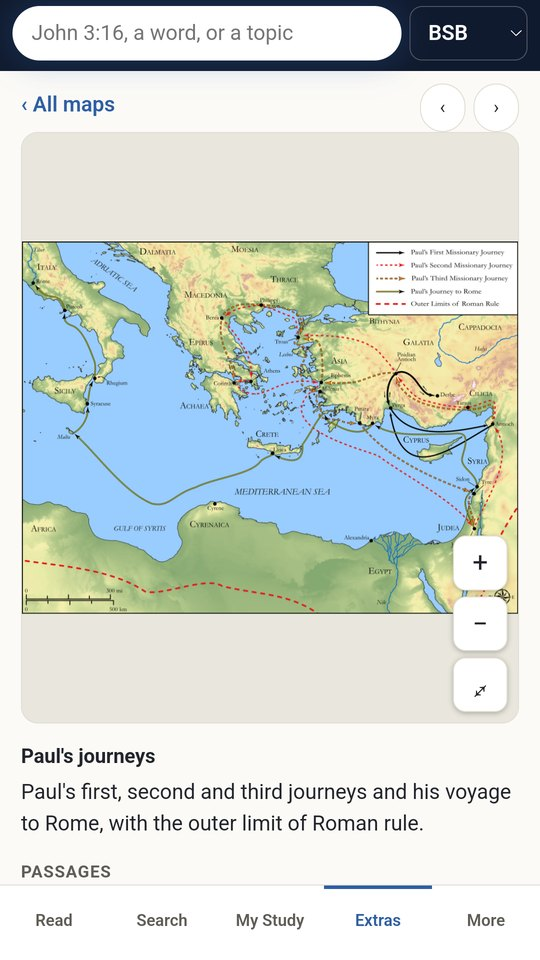
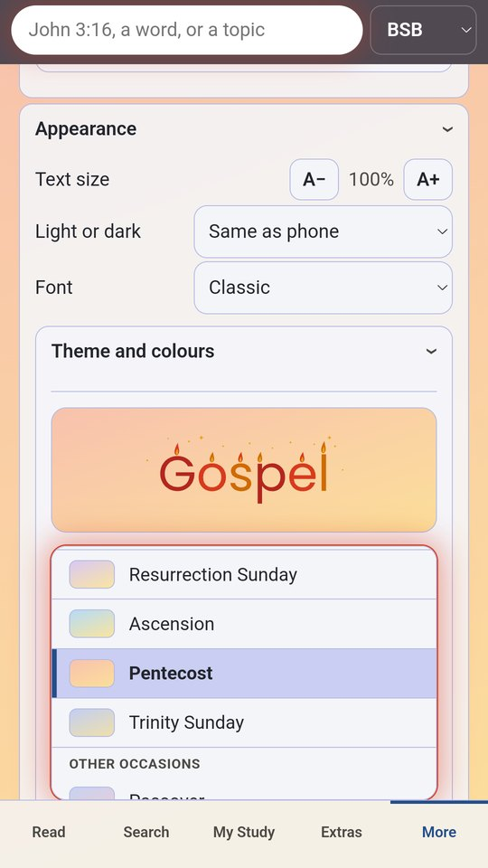
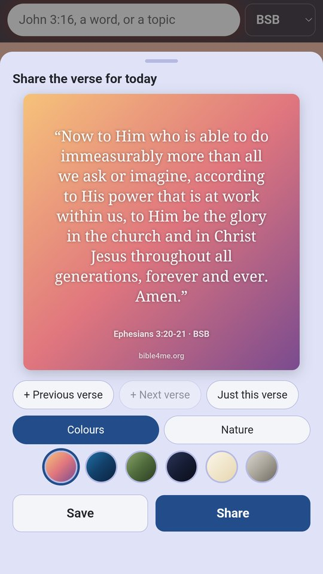
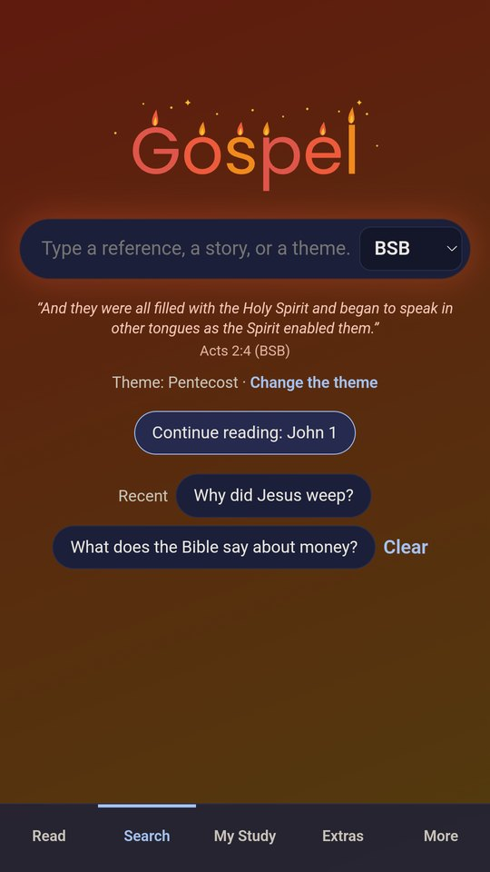
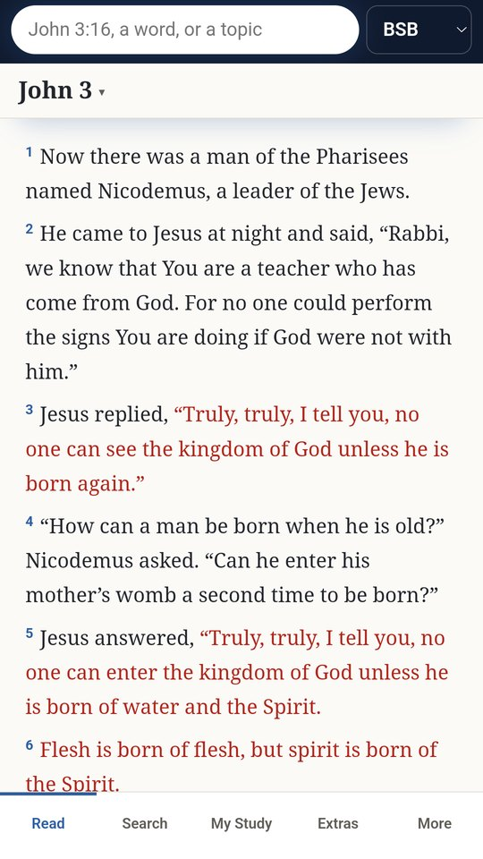
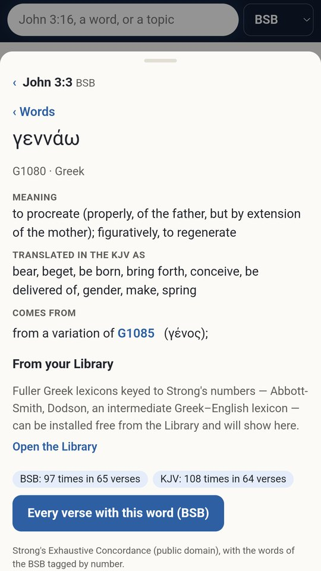
What's inside
Themes
24 themes, from Advent and Christmas to Pentecost, Passover and Harvest, plus Healing, Miracles and Sea of Galilee. Each gives the whole app two soft colours and its own Gospel wordmark, and the list shows every theme with a live preview before you decide. The app can offer the theme of the season; you choose whether to keep it. The Bible text stays easy to read in every theme.
Ask a question
More than 400 questions have a written answer that quotes the Bible first and says where Christians hold different views. Family questions (a person's parents, wife or sons) are answered from the Bible's own lists, and a misspelt word is put right. Under an answer the app suggests matching stories and pages.
Bible stories and pages for children
31 Bible stories, 22 “Verses for…” pages for the moments that matter (anxiety, fear, hope, joy, love, wisdom, heaven and more) and 20 pages for children to read together, with a memory verse, questions and something to try. Every page links to the passages in your own Bible. Optional paintings, and children's drawings that turn into an outline to colour in.
Bible maps
Nine ready-made maps (the twelve tribes, the kingdoms, the ministry of Jesus, Paul's journeys and more) to zoom and drag, each with the passages it goes with.
Share a story or a verse
Send a story or a page, set out as in the app with the Scripture words and its picture, by WhatsApp, e-mail or anything else. Share the verse for today as a picture with up to three verses on it.
More stories without an update
Tap Fetch additional stories and the app brings any new stories, “Verses for…” pages and pages for children, with their pictures, so you do not have to wait for a new version.
One search box
Type a reference such as "John 3:16" or "1 cor 13" to go straight there. Type a word, a phrase or a subject, such as "gifts of the Spirit", to search the whole Bible, one testament or one book. Search the way you remember it: "Daniel's prayer delayed by 21 days" finds Daniel 10, "the prodigal son" finds Luke 15, and misspelt names are put right. The free Advanced search upgrade (a one-time 31 MB download, then offline) finds verses by what you mean, not only by your words. Ask a question, such as "how many days was Jesus on earth after His resurrection?", and the answer comes first, with its verses.
Five translations built in
BSB, KJV, ASV, WEB and YLT, with the words of Jesus in red. Swipe sideways to turn the chapter.
1,200+ more Bibles
Download any of the free translations from eBible.org, in hundreds of languages, or add a Bible you have as an e-Sword, MySword or SWORD file, and read them, compare them or set them side by side. Searching uses the built-in BSB.
Side by side
Show a second translation under each verse as you read.
Tap a verse
Bookmark it, highlight it in eleven colours (named as you like, the same as on your computer), write a note on it, see its cross-references, compare it across the translations, share it or copy it.
Word study
In the BSB and KJV, tap a word for its Hebrew or Greek root from Strong's, its meaning, how often it is used, and every verse that uses it.
Study notes
Tyndale Open Study Notes on each verse and chapter, and an introduction to every book of the Bible.
A library on your phone
Download free commentaries, dictionaries, books and devotionals from CrossWire (Barnes, Matthew Henry, Easton's, Spurgeon and many more), or add e-Sword, MySword and MyBible modules you have. Tap a verse, then Commentaries, to read what yours say about it; look up a word or a Strong's number, and open a devotional on today's date.
In step with your computer
At home on your Wi-Fi, the phone and the Windows app keep your bookmarks, highlights, notes and reading plans the same. No cloud and no account: they talk straight to each other.
Verse pictures
Turn a verse, or up to three verses in a row, into a picture on a colour or one of 100 nature photos, then save it or share it to WhatsApp or anywhere else. The photos are a one-time 8 MB download.
Read aloud
From any verse, carrying on into the next chapter. Choose among the phone's voices, pick the speed, and set a sleep timer.
Reading plans and a daily reminder
Four reading plans, a reminder at the time you choose, and a reading streak that counts your days in a row and the chapters you have read.
Bible dictionary and topics
Easton's and Smith's dictionaries, with every Scripture reference a link, topics from Nave's and Torrey's topical Bibles, and a page on each of the 40 Authors of the Bible.
My Study, with tags
All your bookmarks, highlights and notes in one place. Give bookmarks and notes your own tags and filter by them.
Backup
Save your bookmarks, highlights, notes and reading plans to a file, and restore it on the phone or in the Windows app.
Make it yours
Light, sepia or dark; a theme and a colour of the app, four text colours, high contrast, two fonts and the text size you like. A verse for the day when you open the app.
Tells you about updates
The Google Play version is updated by Google Play. The file from this website looks once a day for a newer version and offers it: installing is always your choice, and it can be switched off. New stories arrive separately, with Fetch additional stories.
Offline and private
No account and no adverts. Everything built in works without the internet; only the optional downloads (more Bibles, the library, the story and nature pictures, additional stories, a new version of the app) need it.
What it leaves out
The seven built-in commentaries, the Hebrew and Greek texts with search by grammar, the interactive map, the people and places index, the cross-reference graph, the sermon builder, songs and slides, printing, the printed bulletin and the Bible pictures library are in the Windows app only. They are what make that download large. (The phone's library can download many of the same commentaries, and the optional Original words download adds the Hebrew and Greek behind a tapped word.)
It is for Android phones. There is no iPhone version.